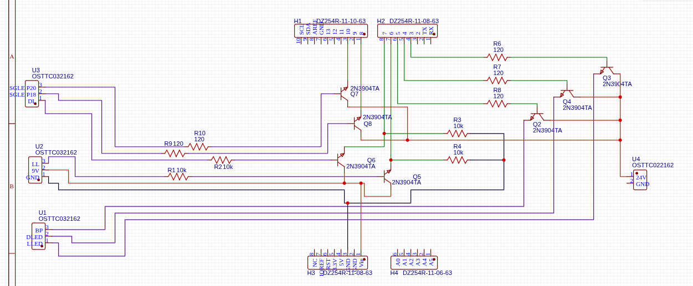
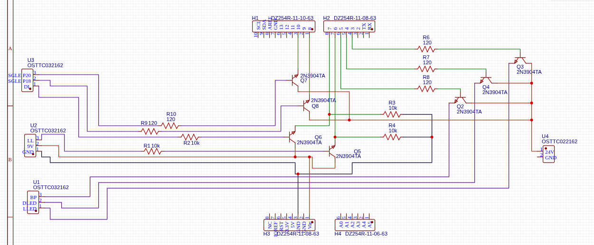

Fady Abousifein
3rd-year Mechatronics Engineering student @ McMaster University — passionate about embedded systems, PCB design, control systems, and robotics. I love building hardware that actually works — and software that works... sometimes.
About Me
I'm a third year Mechatronics Engineering student at McMaster University with a passion for embedded systems, hardware design, and robotics. I enjoy bridging the gap between software and hardware to create practical, real-world solutions.
Experience
Hardware Design and Simulation Engineering Intern
Designed a collision detection system using Arduino and ultrasonic sensing with real-time distance measurement and automated lift-response logic. Built a custom Arduino shield PCB to bridge 24V industrial systems with 5V microcontrollers, featuring transistor-based level shifting and DC-DC buck converters.
Integrated the complete system via CAN communication and validated control logic using Simulink, reducing debugging time by resolving issues in simulation before deployment. Prevented over $100K in losses by replicating a competitor's product in-house.
 


Combinatorial Algorithms Research Assistant
Translated pseudocode from research papers into efficient C++ and C algorithms, enabling testing and validation of combinatorial optimization techniques on real-world datasets.
Optimized algorithms to reduce runtime complexity in targeted cases, accelerating computational experiments and improving performance.
Productive Software Development Research Assistant
Contributed to The Checker Framework, a VSCode extension enhancing Java's type system and code safety. Migrated the project from yarn to npm to ensure compatibility with the evolving VSCode extension API.
Improved project stability and long-term maintainability. Authored and updated project documentation for clear onboarding and version consistency.
Projects
Embedded Stepper Motor Control System
Engineered a real-time stepper motor control system on the STM32F429ZI using mbed OS. Implemented precise, non-blocking angular motion control via Ticker and Timeout without halting program execution.
Developed interrupt-driven controls for motor direction, speed, and stepping mode with debounced hardware buttons. Created a dynamic LCD interface displaying motor parameters and system status for real-time feedback.
Sequential Digital Circuit Design
Engineered a sequential digital circuit to drive a seven-segment display showing a student ID. Applied finite state machines (FSMs), counters, and binary-coded decimal (BCD) encoding for precise sequencing.
Designed using 6 JK flip-flops and optimized Boolean logic via Karnaugh Map minimization. Verified in Logisim before building and testing the final design on a breadboard.
Please refer to the full Resume linked above for more detailed information.